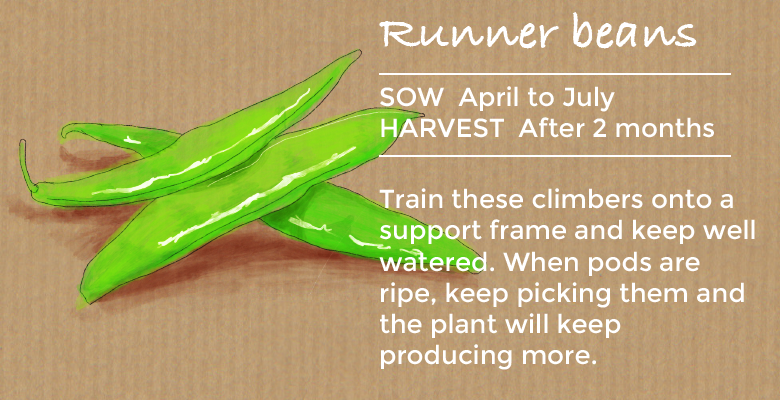
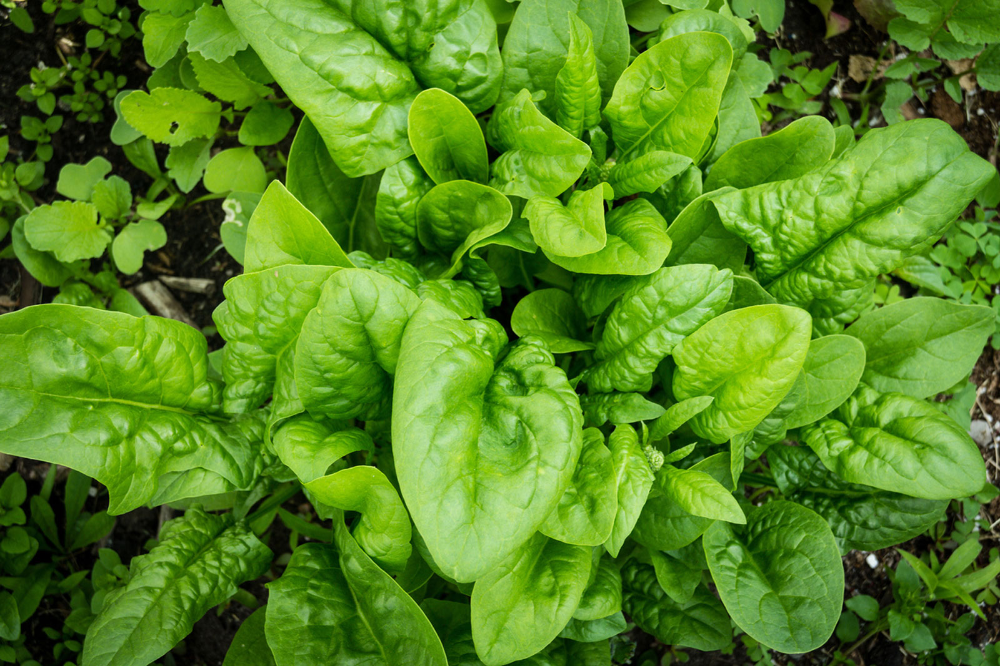

EASILY GROWN INDOOR PLANT

"To Plant a Garden is to believe in Tomorrow"
You can grow anything at anytime of the year using indoor gardening. This is really important for those countries and zones which receive very less hours of sunlight. Owing to recent technological advancements, especially the usage of LED grow lights, indoor gardening has become pretty convenient and you can grow any type of flower, food and any ornamental plant, regardless of the weather and the time of the year.
Air Purifying Plants: As we all know, plants take in carbon dioxide and produce oxygen, while the human body does exactly complete opposite. Having plants in and around your house will drastically improve the quality of air you breathe. Many air purifier plants filter the air around the plants and absorb toxic gases such as benzene and formaldehyde. You can check a detailed video on NASA recommended air purifying plant .
Grow Fresh Herbs and Vegetables organically for you Kitchen. This I feel, is the most important benefit. I understand, this may not be so easy practically as it sounds. Though not indoors, I have always recommended organic vegetable gardening in your home or terrace in containers.
INDOOR PLANT :
POTATOES

A fun crop to grow Plant potatoes during late February and March in potato bags that are only part filled with compost. When the green shoots begin to appear above the soil, simply cover them with more compost. Repeat until the bag is full, and then you only need remember to water them! The real fun comes at the end of the season, 10 to 20 weeks later when the foliage starts to yellow and die back. Tip the bag out and rummage around in the soil to collect up your own home grown potatoes . Potatoes are such easy vegetables to grow at home!
RADISHES

Spice up your salads with crunchy, peppery radishes. They're easy to grow in containers, or sow them directly into the ground throughout the summer for a succession of crunchy, colourful crops.'French Breakfast 3' is a popular old variety that has stood the test of time, while 'Rainbow Mixed' will give you a colourful visual treat for your plate as well as masses of flavour!
SPRING ONIONS

Give your salads a tangy crunch with some quick-growing spring onions. Companion planting with mint will help to deter onion fly. Try 'White Lisbon' for a crop that'll overwinter, or 'Performer' for a milder taste.
TOMATOES

Tomato plants are so quick that you can almost watch them grow, so they are the ideal easy vegetable for kids to cultivate. Choose a bush variety like 'Romello ' that can be planted in hanging baskets and window boxes. Bush varieties don't require training or side-shooting, so you only need to feed and water them before the fruit starts to pour from the plant!
RUNNER BEANS
Almost as simple as broad beans and you can sow them in the same way. Runner Beans are climbers so give them plenty of space and train them onto wires or a plant support frame. Keep them well watered and they will reward you with a constant supply in summer. Regular picking is essential - but that won't be a problem when they taste so good! If you are short on space, why not try dwarf runner bean 'Hestia'.
CORIANDER

Who doesn’t love fragrant and fresh coriander on a steaming bowl of gravy or on a tropical salad? These tiny leaves are bound to add a beautiful aroma every dish they are added to. And it’s extremely easy to grow them on your own. Take a handful of coriander seeds and press them slightly to break them into two. Soak the broken seeds in water overnight. Mix sand, red soil, cocopeat, neem cake and compost in equal quantities to make the potting mix. Drain this potting mix well and scrape lines through it to sow the seeds. Spread the seeds evenly along the scraped lines. Cover the seeds lightly with soil and dry leaves. Sprinkle with a little water. After the seeds have sprouted, spray with diluted buttermilk or Panchagavya once every 15 days. Do not overwater the plants. Harvest the Coriander once it’s ready.
MINT

Perhaps the easiest plant in the list to nurture at home since you do not even need soil for it! Keep aside a few sprigs of mint from a fresh bunch you got from the market. Choose a healthy, thick stem and make a cut at around 15 cm along the length, below the node. Remove a few leaves gently from the cutting. Put a few such cuttings in a glass of clean water. Keep indoors, away from sunlight. In a few days, the cuttings will sprout new leaves and grow roots. You can use the leaves directly or transplant the saplings into fresh potting soil.
SPINACH
From baby spinach in salads to spinachy goodness in pasta alfredo, the iron-packed powerhouse leafy green is a must-have in your home garden. The upside is that it grows really fast too! Prepare a potting mix using well-drained loamy soil enriched with organic compost. Sow the spinach seeds gently in rows or blocks around 1-1.5 feet apart, cover loosely with soil and water well till germination. Once true leaves start appearing, space out the saplings around six inches apart to allow ample space for each plant. Keep under direct daytime exposure to sunlight or partial shade. Pick the leaves whenever needed. Leaves will continue to regrow until the end of the season.
"If you want to breathe healthy in future then start planting"

"A Beautiful Plant is like having a Friend Around the House"
"Plant instantly attract the eye,calm the Soul and bring a peacefulness to any room"